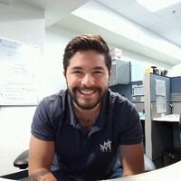

Hugo Monge Cedeño

Main Skills: Lead for Process Validation Projects | New Process Implementation | Automation Implementation | Process Improvement
About
Having a family full of doctors you might think becoming a doctor was my career path dream. You are absolutely right. Even when the signs of a mechanical engineer where clearly present (my favorite activity to do with my toys was to tear them apart to try to understand what was making them work), I always talked of how I wished to be a doctor.
When the time came to select a career path however, I took the right path. Mechanical engenieering has helped me understand the world and I am completly gratefull with my young self of the decision I made.
I am the same kid that wanted to take toys apart and understand how they work. Toys just keep getting bigger and more complex. I ended up in working in the medical field. This makes perfect sense for me. The ultimate machine to understand is the human body, and there is a world of possibilities out there in ways we can work in repairing and improving this machine.
Work Experience
Project Engineer II
Cardinal Health · Full Time
Project Lead · Technical Lead · Automation Lead
Full Description and Projects
Skills: Project Management · Automation · Process Improvement · Process Validation · Regulated Industry
Process Development Engineer
Boston Scientific · 4 yrs 6 mos
Intern · Designer · Project Lead
Full Description and Projects
Education
Licenses & Certifications